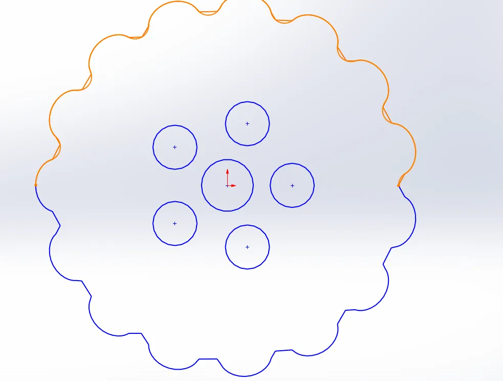
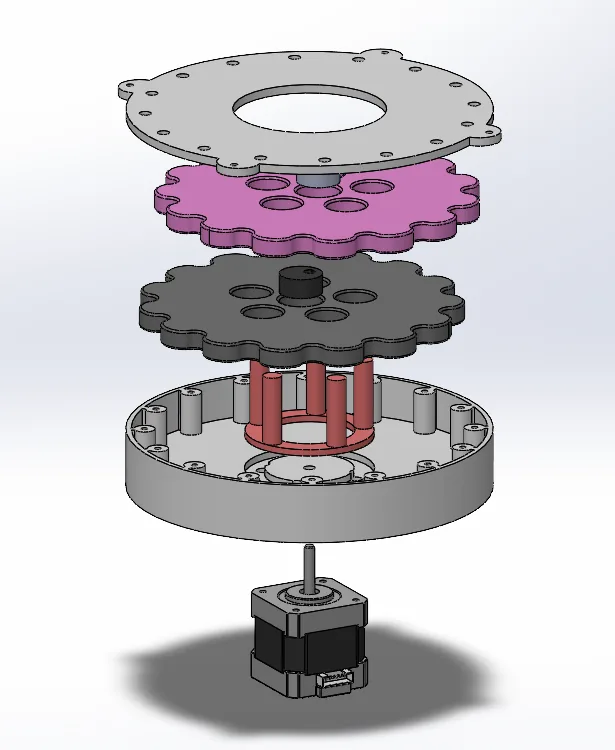
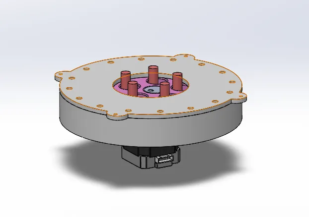
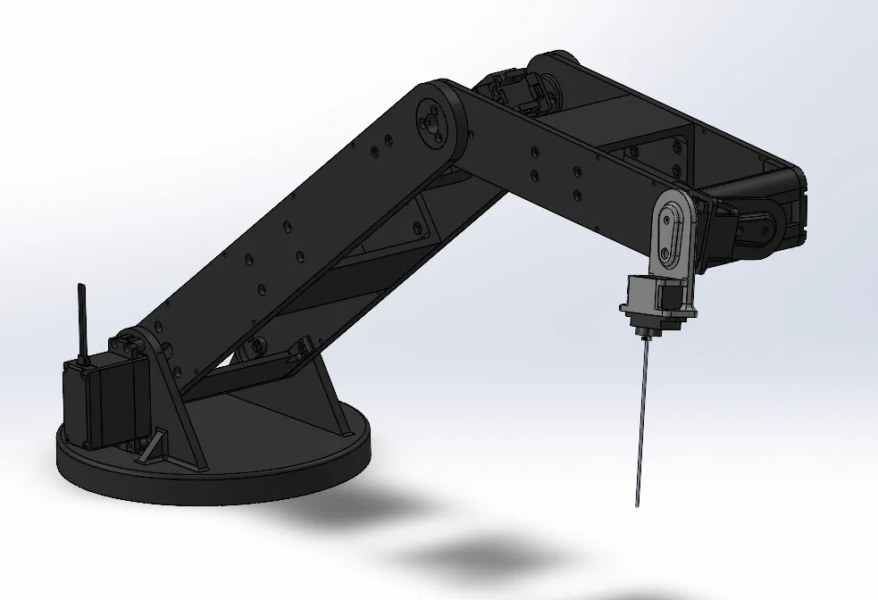

01Overview
I took on this personal project to design and build a complete six-axis arm myself. I modeled the full arm in SolidWorks, from the base and gearbox through the links and the wrist, then fabricated the components with 3D printing.
02Cycloidal gearbox
The base joint is driven through a custom two-stage cycloidal gearbox with a 15:1 reduction. I designed it in SolidWorks, from the cycloidal disc profile to the housing, and 3D-printed it along with the rest of the arm.






03Wire routing
Six axes means a lot of wiring to manage. I routed and integrated the wiring through the arm so it keeps clearance through the full range of motion on all six axes, across a 20-inch reach radius.
04Design evolution
My early layouts sat the arm on a simple round base. The later design mounts it on the cycloidal-gearbox base housing.

